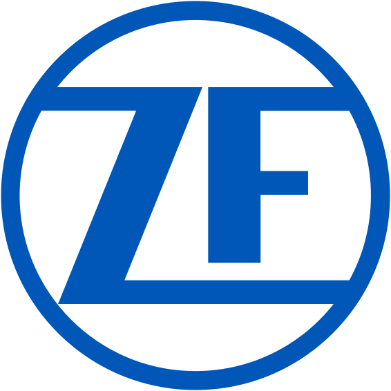
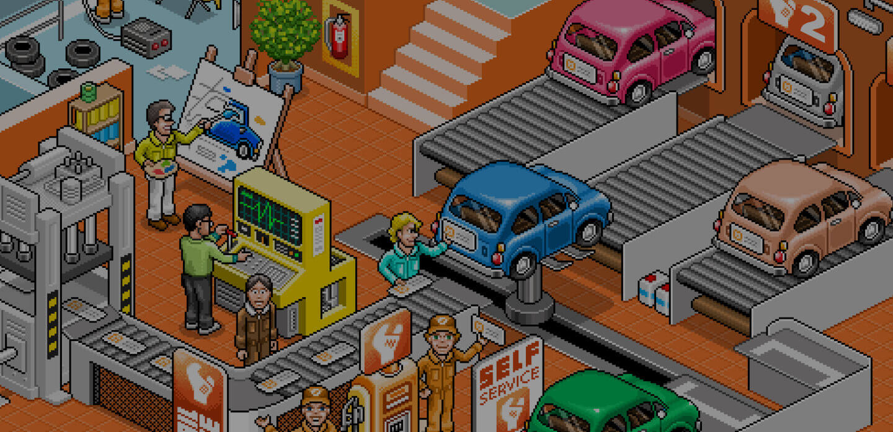
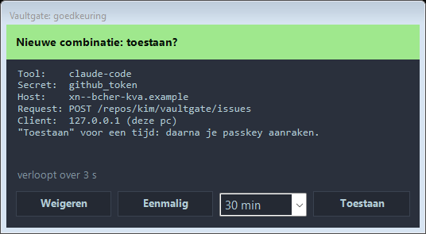

Kim VanRenterghem
Senior .NET engineer. Ik breng structuur in chaotische codebases en maak teams sterker.
Profiel
- Aan de slag sinds
- 2008
- Opdrachten
- 18 opdrachten, waarvan 15 als consultant
- Spreker op
- Techorama, VISUG, Howest
- Karakter
- Creatief, leergierig, teamspeler, vernieuwende denker
Als gepassioneerde developer vind ik het geweldig om businessproblemen op een creatieve manier om te zetten in code. Mijn carrière toont een consistent patroon: niet alleen oplossingen leveren, maar teams naar een hoger niveau tillen.
Of ik nu architectuur definieer voor complexe systemen, legacy-applicaties moderniseer of engineering practices invoer – ik zorg dat teams zelf sterker en onafhankelijker worden.
Ik ben expert in het structureren van chaotische codebases, het definiëren van duurzame architecturen en het introduceren van best practices die echt werken. CQRS, SOLID, CUPID, clean architecturen, DDD, Event Sourcing, Mob Programming – dit zijn niet zomaar buzzwords, maar tools die ik regelmatig toepas en waarover ik graag uren kan praten.
Wat ik het mooiste vind aan dit vak is dat je jezelf voortdurend moet uitdagen en vernieuwen. Maar nog beter: je kunt anderen helpen dat ook te doen. Zo creëer ik een betere en dynamische omgeving waarin iedereen zich thuis voelt en kan uitblinken.
De gereedschapskist
Werkwijzen
- Domain-Driven Design
- CQRS & Event Sourcing
- SOLID & CUPID
- Clean & hexagonale architectuur
- TDD & BDD
- Pair & mob programming
- Event storming
Skills
- .NET Core
- C#
- TypeScript
- JavaScript
- vitest
- Angular
- Swagger
- CQRS
- DDD
- TDD
- SOLID
- Pain Driven Development
- Scrum
- NServiceBus
- Kafka
- SQS
- SNS
- EventStore
- Redis
- Proto.Actor
- #NoProjects
- DevOps
- Docker
- npm
- RxJS
- Vue.js
- D3
- Chart.js
- Electron
- Avalonia
- RabbitMQ
- MassTransit
- MongoDB
- Neo4j
- MySQL
- SQLite
- Oracle
- DB2
- NHibernate
- AWS
- Azure
- Helm
- OpenShift
- Terraform
- nginx
- IIS
- AppVeyor
- xUnit
- Jasmine
- Karma
- NuGet
- gulp
- Visual Studio
- Rider
- Git
- GitHub
- GitLab
- TFS
- Copilot
- Claude
- Agentic AI
- OPC UA
- Siemens S7
- Mendix
- Siemens Opcenter
Zo werk ik
Effectief, niet efficiënt
Eerst het juiste doen, dan pas snel.
Meer communicatie
De meeste bugs beginnen als een misverstand tussen mensen.
Schrijf code als tekst
Code wordt veel vaker gelezen dan geschreven, dus moet ze lezen als proza.
Werk sinds 2008
Open een opdracht om te lezen wat ik er deed. Kies een techniek om te zien waar ik ze gebruikte.
-
Actemium.NET Developer09/2026 – heden
Bij Actemium, de specialist in industriële automatisering en MES binnen VINCI Energies, werk ik als .NET developer in een productieomgeving gebouwd op Siemens Opcenter en Mendix.
In dit atypische landschap met meerdere platformen heb ik mij snel ingewerkt in Mendix en geleerd hoe .NET, Mendix en Opcenter samenwerken bovenop een gedeelde SQL-database. Ik focus op het analyseren en oplossen van problemen over alle drie de lagen heen, van de Mendix-frontend via de .NET-logica tot in de data.
-
ZFSenior Software Engineer05/2024 – 08/2026
Als Senior Software Engineer in het Franklin-team leidde ik de ontwikkeling en evolutie van een geavanceerd rules engine- en geofencing-platform voor ZF, een toonaangevend automotive- en transportbedrijf. Het platform stelt gebruikers in staat om generieke alarmen te maken voor veel voorkomende problemen, zoals lage bandenspanning en brandstofdiefstalkeuringen, door sensorgegevens uit hardware in trailers en vrachtwagens te verwerken.
Ik heb de basis voor het herschrijven van het gehele platform ontworpen en ervoor gezorgd dat nieuwe apparaten regels aan boord kunnen uitvoeren. Het platform is gebouwd met C# met een AST (Abstract Syntax Tree) builder die regels omzet naar code die compatibel is met zowel legacy als nieuwe systemen, werkend in een high-throughput AWS-omgeving met Kafka, Redis, proto.Actor en MongoDB.
Naast kerneontwikkeling heb ik de engineeringpraktijken in de hele organisatie aanzienlijk verbeterd door het team te mentoreren: ik introduceerde en begeleidde teams over Clean Coding, Domain-Driven Design en Test-Driven Development via meerdere bedrijfsbrede workshops. Ik stroomlijnde het sensoronboarding-proces met Claude AI-agents en GitHub Copilot, waardoor teams nieuwe sensoren volledig automatisch kunnen toevoegen. Ik verdubbelde de testdekking en implementeerde een uitgebreide BDD (Behavior-Driven Development) architectuur om tests beschrijvender en onderhoudsbaarder te maken. Met deze aanpak groeide de rules testsuite in twee jaar van 800 naar 3.500 tests, waardoor platformrobuustheid en betrouwbaarheid werden gegarandeerd.

- Team4TalentConsultant · 11 klanten01/2017 – 05/2024
-
EuromexSecurity Solutions Developer05/2023 – 05/2024
In mijn functie bij Euromex concentreerde ik me op het versterken van onze applicatiebeveiliging, met een speciale focus op het implementeren van een Identity Provider via OAuth. Dit was cruciaal voor het verbeteren van de authenticatie en autorisatieprocessen. Belangrijk in dit proces was de integratie met externe providers zoals Portima Connect en Windows Active Directory, die cruciaal waren voor een naadloze en veilige gebruikerservaring. Door deze strategieën toe te passen, verbeterden we aanzienlijk de beveiliging van onze applicaties en versterkten we onze positie als een betrouwbare technologische partner.
-
RensonSenior Fullstack .NET Developer11/2022 – 05/2023
Renson is een innovatief bedrijf dat momenteel een webshop heeft voor hun buitenproducten. Ze willen dit platform uitbreiden om ook hun binnenproducten te verkopen. Daarnaast willen ze een indirect platform opzetten. Hun webshop is het begin- en eindpunt van een complexe keten van applicaties. Mijn rol is om het team te helpen bij een soepele integratie en om te kijken waar onnodige technische schulden kunnen worden vermeden of in ieder geval niet blokkerend werken voor de toekomst.
-
Intersentia.NET Dev Lead04/2022 – 10/2022
Bij Intersentia, een uitgever die ook software voor de personenbelasting ontwikkelt, was ik verantwoordelijk voor het ontwerpen van een modernere Cloud-versie van hun applicatie, het modelleren van de schermen en het opzetten van de applicatiearchitectuur. Omdat het bedrijf intern nog weinig ervaring had met webtechnologieën, kon ik mijn UX-ervaring goed inzetten. Ik kreeg niet alleen de mogelijkheid om de applicatie te modelleren en ontwerpen, maar ook om deze daadwerkelijk te ontwikkelen en het team hiervan te begeleiden. Dit alles werd gerealiseerd met behulp van AWS, ECS en S3. De frontend werd ontwikkeld in Angular met een Bootstrap-team. De backend werd ontwikkeld met de API-first principes, CQRS en hexagonale architectuur in .NET 7.
-
ECSSenior Fullstack .NET Developer / Team Lead05/2021 – 04/2022
Bij ECS werk ik als senior full-stack developer binnen één van de ERP-teams. Mijn taak is om de oude applicatie van VB naar .NET Core WebAPI te herwerken met een Angular-frontend. Daarnaast hebben we een extern planningspakket, Quintiq, aangekocht waarvoor we interfacing en postcalculatie moeten voorzien. Naast mijn rol als senior developer, word ik ook ingezet als tech lead en team lead.
-
Spirics.NET/Vue.js Developer / Team Lead / Architect09/2020 – 04/2021
Ik werkte bij Spirics, een bedrijf dat automatisatie doet van kneed- en silo-installaties. Het bedrijf wilde klaar zijn voor de volgende stap in industrie 3.0 en daarom startte er een project om de processturing uit de PLC te halen en om te vormen naar de ISA88-standaard. Het team had moeite met het definiëren van de opdracht en hoe ze hieraan konden beginnen. Daarom heb ik de structuur van het project bepaald, de grenzen vastgesteld en de interfaces met de PLC bepaald. Ook heb ik de architectuur van een "message based systeem" ontwikkeld, waarbij enkele componenten gebaseerd waren op eventSourcing. In enkele maanden hebben we op een zeer flexibele en configureerbare manier de recepten kunnen uitvoeren. We hebben ook een krachtige, maar eenvoudige voorstelling gemaakt voor het inplannen van batches en de uitvoering ervan.
-
Artillium.NET/Vue.js Developer / Team Lead01/2019 – 09/2020
Bij Artillium ontwikkelen ze software die de communicatie tussen operatoren zoals Telenet en Proximus en mvmo's zoals Mobile Vikings en Ello Mobile faciliteert. Met de opkomst van IoT zijn ze begonnen aan de ontwikkeling van een platform dat hierop inspeelt, waardoor nieuwe mvmo's eenvoudig hun eigen IoT divisies kunnen beheren en aankopen. Het platform bevat ook statistieken over de netwerkactiviteit.
Ik nam al snel de rol van "UI-verantwoordelijke" op mij, aangezien ik de enige was met frontend-kennis binnen het team. Na verloop van tijd werd ik benoemd tot lead van het gehele ITO-team, waarbij ik ook betrokken ben bij het recruitment proces. In deze leadership-rol heb ik het team mentoreerd en ondersteund bij professionele groei. Het team maakt gebruik van Vue.js voor de frontend en .Net Core voor de backend, waarbij alles draait in Docker met een nginx-gateway en Node.js voor het beheer van de JWT-tokens via Identity Server.
-
Barc Labs.NET Developer / Architect10/2018 – 12/2018
Bij Barc werkte ik aan een oude applicatie die gebaseerd was op WPF/WCF, maar die erg complex was geworden en waarbij zowel de database als de applicatie vol met spaghetti-code zaten. Ik kreeg als opdracht om een modernere architectuur op te zetten waarbij componenten onafhankelijk van elkaar ontwikkeld konden worden. Dit vereiste zowel technische als organisatorische veranderingen. De uitdaging was om de bedrijfskritieke componenten te identificeren en deze te analyseren via eventstorming om vervolgens nieuwe, verbeterde componenten te ontwikkelen. Dit alles vond plaats tijdens een grondige transformatie van het hele bedrijf.
-
TUI.NET Developer01/2018 – 10/2018
Tui had een oude .Net Back-end applicatie die dringend gerefactored moest worden met de nieuwste principes zoals CQRS, SOLID en Event Sourcing, maar ook met technieken uit de DDD en met test-driven en pair/mob programming als centrale werkwijze. Om dit te bereiken werd er een nieuw team opgericht dat in verschillende stappen te werk ging, zodat de bestaande teams ongestoord konden doorgaan met hun werk. Zo kon er aan de nieuwe applicatie worden gewerkt, die niet langer een grote monoliet was, maar een mooie zwerm van microservices die via events met elkaar communiceerden.
-
Agidens.NET Developer09/2017 – 12/2017
Bij Agidens houden ze zich bezig met de automatisering van bruggen, sluizen en andere infrastructuur. Ik hielp hen bij het .NET-gedeelte van hun oplossingen. Bij het ontwikkelen van verschillende tools, zoals een REST-integratie in een andere taal waarbij de limiet voor strings 255 tekens is. Ik maakte een synchronisatie tussen een API en een OPC-server, een HTML-pagina om sluizen te bedienen met bijbehorende lichten op een REST API van een OPC en een integratie met het S7-protocol van een PLC. Ik ontwikkelde ook een testtool om de PLC te testen aan de hand van inputbestanden. Ten slotte hielp ik met het optimaliseren van de ontwikkelomgeving en -workflow van Agidens.
-
Recomatics.NET Developer / Application Tester05/2017 – 08/2017
Dit project was bedoeld omdat Recomatics een vernieuwde versie van hun bestaande applicatie had gemaakt en een derde mening wilden over de robuustheid van hun applicatie, evenals hulp bij het verbeteren ervan. Om dit te doen, werden prestatietests uitgevoerd met behulp van Visual Studio om de API te benaderen en te observeren hoe de applicatie presteert onder belasting.
-
Attentia.NET Developer01/2017 – 05/2017
Dit project is gericht op de ontwikkeling van de Kalender-applicatie bij Attentia. Deze applicatie stelt werknemers in staat om verschillende soorten tijdsbestedingen in te boeken, zoals vakantie, aanwezigheid, afwezigheid, ziekte, overuren, wacht, enzovoort, met de bijbehorende regels en procedures. Het bevat ook workflows voor goedkeuring, validatie van opeenvolgende ziektes en toevoeging van ziektebriefjes.
- EuricomConsultant · 1 klant08/2016 – 12/2016
-
House of HR.NET Developer08/2016 – 12/2016
House of HR is in korte tijd uitgegroeid van een KMO naar een multinational. Twee jaar tijd zijn ze overgestapt van Progress naar .NET, C# en Angular webapplicatie. Hun verschillende applicaties bevinden zich in één grote solution en tot nu toe lag de focus vooral op oplevering. Door een snel veranderende wetgeving en vijf teams ontstond er een complexe omgeving met een enorme codebasis. Ik werd ingezet om het team te versterken, te ondersteunen en hun codebase beter gestructureerd te krijgen in deze transitie.
- IT DivisionConsultant · 3 klanten06/2015 – 07/2016
-
ArcelorMittal.NET Developer / Architect / Lead02/2016 – 07/2016
Arcelor werkt momenteel aan het opschalen van hun infrastructuur met als doel om uniformiteit te creëren tussen hun verschillende sites en een gemeenschappelijk databaseplatform te implementeren. In het kader hiervan wordt een van hun applicaties, genaamd "lijnplanning", die momenteel is ontwikkeld in VB6/CoolGen, opnieuw ontworpen. Ik was betrokken bij de functionele analyse om te bepalen wat de vereisten zijn van de business. Vervolgens zal de architectuur van de applicatie worden bepaald, zodat deze met minimale wijzigingen kan worden ingezet in de nieuwe, nog te bepalen architectuur. Ik was verantwoordelijk voor het kleine team dat dit project uitwerkt, in overleg met de andere teams om uniformiteit te garanderen tussen de verschillende applicaties.
-
Constructiv.NET / AngularJS Developer10/2015 – 02/2016
Ik heb meegewerkt aan de ontwikkeling van een website voor Constructiv met behulp van ASP.NET MVC en een HTML5/AngularJS front-end. De website was gebaseerd op een custom CMS en zowel de front-end (website) als de backend (CMS) werden ontwikkeld. Als .NET en AngularJS ontwikkelaar maakte ik deel uit van een team van drie ontwikkelaars en was ik voornamelijk verantwoordelijk voor het ontwikkelen van front-end user stories op basis van de geleverde HTML. De front-end werd volledig ontwikkeld met behulp van AngularJS, dat data ophaalde uit de backend ASP.NET MVC-controllers. Daarnaast was ik ook verantwoordelijk voor het af en toe aanpassen van de backend controllers. Ik had ook de verantwoordelijkheid om een junior teamlid te begeleiden.
-
Cloudware.NET Developer06/2015 – 10/2015
Als .NET ontwikkelaar werkte ik bij Cloudware in een team van 4 ontwikkelaars die Microsoft Cloud producten implementeerden bij KMO's en enkele Cloud tools (online en offline) ontwikkelden, zoals migratietools, bestandsback-up naar Azure, bestandsback-up naar SharePoint Online, e-mail migratie naar Office 365, enz.
Mijn belangrijkste taak was om de migratietools of onderdelen die nog uit R&D-code bestonden, te refactoren tot stabiele, robuuste code die gereed was voor productie, zowel qua front-end als backend. Daarnaast bundelden we verschillende losstaande tools tot één suite. De migratietools maakten het mogelijk om een offline bestandsstructuur om te zetten naar een SharePoint Onlinesite (die deze omzet naar bibliotheken en mappen) of naar een Azure-opslag blob.
-
EmailGarageDeveloper, later Team Lead06/2008 – 10/2015
Als .NET ontwikkelaar was ik verantwoordelijk voor de technische implementatie van diverse online e-marketing tools bij Emailgarage. Ik werkte aan de full stack van de tools en had als hoofdtaak het analyseren en implementeren van nieuwe functionaliteit, optimaliseren van bestaande functionaliteit en moderniseren van de interface. Ook was ik verantwoordelijk voor het managen van de deploy en rollback scenario's en voerde ik implementaties op maat uit voor bepaalde klanten.
Ik begon als medior ASP.NET ontwikkelaar bij Emailgarage en groeide later door naar team lead. In deze rol was ik verantwoordelijk voor de verdere opleiding en code reviews van het team. We werkten aan diverse projecten tegelijk, zoals het implementeren van nieuwe functionaliteit, aanpassen van bestaande functionaliteit en het uitvoeren van implementaties op maat voor klanten. Binnen het team werden de technologische keuzes gezamenlijk gemaakt en was er ruimte voor onderzoek en studie.
Als onderdeel van de redesign binnen dit project gaf ik een opleiding ASP.NET MVC. Ik heb binnen dit project ook de monitortool opnieuw geschreven in ASP.NET MVC omdat deze sterk verouderd was.

lady-lens
Deterministische code-graph indexer en MCP-server: open source, in pure JavaScript, ondersteund door LadybugDB.
lady-lens groeide binnen de bouw van Kura, onze eigen coding agent, en werd daarna een eigen package.
Zet codebases (JavaScript/TypeScript, Python, C#) zonder zware LLM-overhead om in een bevraagbare kennisgraaf met symbolen, afhankelijkheden (IMPORTS, CALLS, TESTS), impactanalyse en deterministische subgraaf-extractie voor AI coding agents.
Combineert AST-/semantische extractie met een lokaal getraind, reproduceerbaar lineair rankingmodel (IDF + pairwise logistic loss) om contextbloat en tokenverbruik bij AI-agents drastisch te verlagen.
- 3,4 s
- voor een volledige sync van een repository met 349 bestanden.
- 0,2 s
- voor een incrementele sync na een wijziging.
Vaultgate
Je AI-agents gebruiken je sleutels. Ze zien ze nooit.

Een lokale poort tussen AI-agents en het internet. De agent stuurt een placeholder ({{secret:github_token}}); Vaultgate vult de echte sleutel pas in wanneer het verzoek je computer verlaat, en alleen voor de tool, de host en de plek in het verzoek die je toestond. Antwoorden worden opgeschoond voor de agent ze ziet, ook base64- en hex-kopieën.
Eén beslissingstabel waarin de eerste regel wint en zijn naam meegeeft in elk antwoord. De kluissleutel is willekeurig en per passkey ingepakt via de WebAuthn PRF-extensie; elk veld is versleuteld met XChaCha20-Poly1305. Alles wat blijft duren vraagt een aanraking van je passkey: een programma kan op een knop klikken, maar geen beveiligingssleutel aanraken.
Preview, versie 0.0.1-beta.0. De screenshots tonen het echte portaal met testdata.

Talks & sessies
| Conferenties & user groups | ||
|---|---|---|
| 3 Effective habits to become a 10x developer | Techorama | Sessiepagina |
| Event sourcing & CQRS for dummies | VISUG | Eventpagina |
| Onderwijs | ||
| Domain-Driven Design (gastcollege) | Howest Brugge | |
| Event Sourcing & CQRS for Dummies | Howest Brugge | Slides |
| Interne sessies | ||
| DDD and onion architecture at work in C# | ZF | |
| Mastering the visitor pattern | ZF | |
| Release management with Feature Flags | ZF, Team4Talent | |
| TDD combined with BDD in C# | ZF | |
| Event sourcing and CQRS for dummies | ZF | |
| Become a better developer | ZF | |
| Implementing mediator realtime | ZF | |
| How to remove AutoMapper | ZF | |
| SOLID the Basics | Team4Talent | |
| Serverless (Deel 2: Docker) | Team4Talent | |
| Threading Patterns | Team4Talent | |
| Do We Need Passwords? | Team4Talent | |
| Microservices Security | Team4Talent | |
| Domain-Driven Design | itenium | Slides |
| Waarom ik geen if's meer schrijf | itenium | |
| Waarom scrum geen agile is | itenium | |
Contact
Een team dat structuur nodig heeft, of een sessie over DDD? Stuur me een bericht.